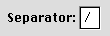

Edit Text Fields and Frames
The edit text field (also known as a "text entry field") is a rectangular area in which the user enters text or modifies existing text. The edit text field can be active or disabled. It supports keyboard focus and password entry.Figure 2-27 shows an edit text field with a label.
Figure 2-27 An edit text field with label
It is up to you to provide appropriate editing services for an edit text field. For more information about this, see "Text Entry Fields" in Macintosh Human Interface Guidelines.
The edit text frame is used to surround an edit text field. It is useful for making a non-standard version of the edit text field Appearance-compliant. The edit text frame is two pixels wide. It has two states, enabled and disabled. Figure 2-28 shows an example of an edit text frame in the enabled state.
Figure 2-28 An edit text frame

For more information on laying out edit text fields, see "Edit Text Field Layout" (page 78).